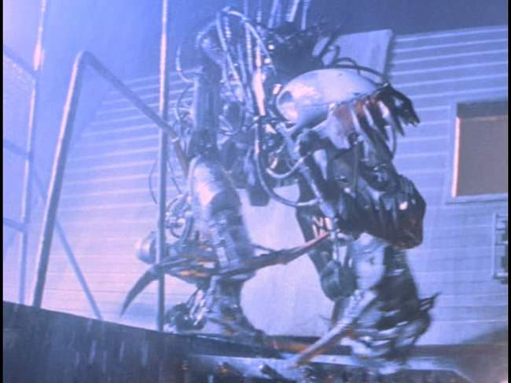
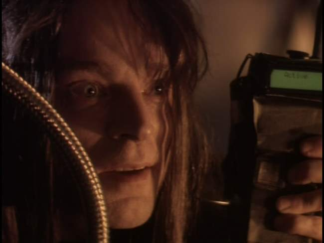
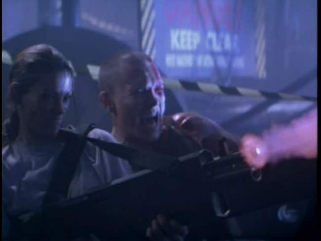
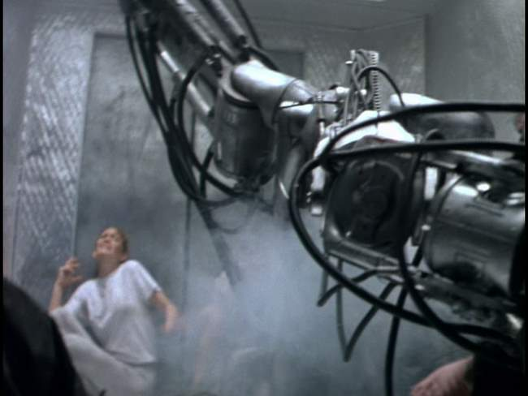
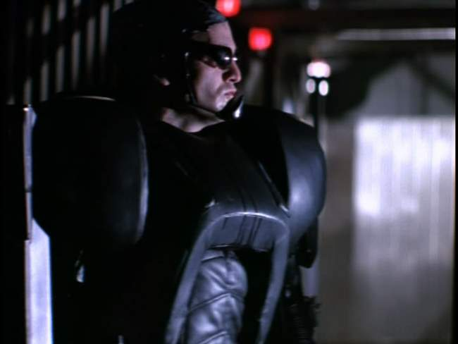
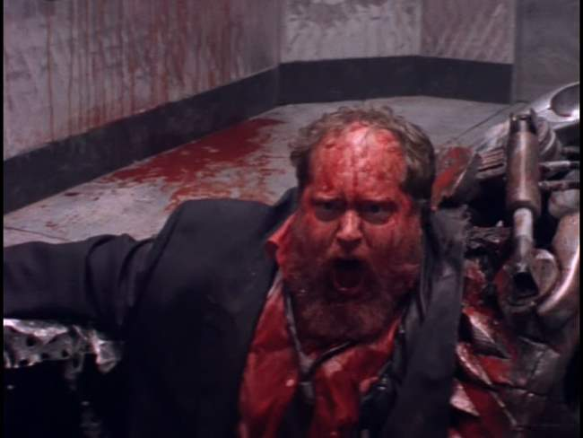

Movie review by : SFAM
Year : 1994
Directed by : Stephen Norrington
Written by : Stephen Norrington
Degree of Cyberpunk visuals : Medium
Correlation to Cyberpunk themes : Low
Rating : 3/10
Key cast members :

Overview: In yet another of the Alien/Terminator copycat movies, Death Machine is a low-budget, poorly thought out shlock-fest that tries to dazzle you with a largely incoherent in-depth plot and over-the-top acting. While another virtually unknown British Director, Richard Stanley, scored big in a similar but far more original copy-cat movie, Hardware, Stephen Norrington's Death Match just doesn't cut it. These types of movies live or die on the overall atmosphere and the quality of the fear the creature engenders. While Hardware excelled on both counts, Death Machine falls woefully short. Worse, Death Machine makes a lame attempt at humour by naming all the bit players with the names from the movies Norrington stole plot bits and visuals from (John Carpenter, Scott Ridley, Weyland, and Yutani)

The Story: In the near-future, the evil Chaank Armaments corporation has engaged in a number of shady, classified project that have resulted in dissapearances and potential deaths. Public outcry has gotten out of hand, so for damage control, they bring in an upstanding principled new chief executive named Hayden Cole (Ely Pouget), a hot chick with a porn past to inspire trust and confidence amongst the masses. As she delves into things, it's clear that the board of directors wants nothing to do with providing full disclosure. Why? Because there is an evil genius mad scientist in the basement named Jack (Brad Dourif), who has the dirt on everyone, and is hard at work at making a death machine to keep everyone in line. Additionally, Jack has created a process for transforming humans into killer-cyborgs. Unfortunately, this process is flawed, and all the cyborgs end up dying.

Eventually, the hawt chief executive challenges Jack, and all hell breaks loose. She and a few others become trapped in the building with some would-be amateur freedom fighter cyberpunk types who have invaded the corporation in the hopes of destroying it. Now they are all just trying to escape the robot known as the War Beast. Hayden and Sam Raimi (John Sharian), the leader of the amateur terrorists, spend the rest of the movie trying to evade and eventually kill the War Beast. I could go into more of the plot, but truly, its just not worth it.

The Robot Monster: OK, so we have this really tough robot thing ? virtually indestructible. Anyone wanna tell me why this robot has like a hundred rubber tubs hanging out, and nobody who fights it in hand-to-hand combat thinks of grabbing them? More to the point, why don't the thousands of rounds of bullets affect the tubes? Bottom line, this robot was more silly than scary. In Hardware, the robot was continually shown moving quickly in low-light situations. This allowed Stanley to get away with a low-tech, but very believable robot. Unfortunately, Death Machine doesn't take this approach ? it shows the robot in detail to make sure you see its faults. Color me not impressed.

Yes, ladies and gentlemen, you can tell this is a cyborg because he's wearing sunglasses. Also, he has that really big vinyl and plastic whatever-the-fuck-it-is on - DEFINITELY a sure sign of a cyborg warrior!
Death Machine's Approach to Cyborgs: In Death Machine, the Chaank Armaments Corporation creates cyborgs by wiping someone's memory and uploading it with detailed weapon systems training, and simple goals (e.g., protect me, seek out and kill "guy X"). In short, its approach to cyborgs assumes the human mind is synonymous with a hard disk. They even have an instance where a key character's personality "backed-up" and then wiped from his mind to allow the "warrior personality" to be installed, and then later, they reload the initial personality. Puleeze, Norrington! I'm sure you coulda come up with a marginally believable cyborg warrior rationale. Too bad you didn't take the time to think of one.

The Bottom Line: Truly, to even have a chance of being watchable, Death Machine would have needed to incorporate a heavy dose of T&A. While Ely Pouget has the looks, this never materializes. This is all the more annoying in that the inclusion of the porn reference flat out portends juicy T&A. Instead, we're left with a shlock "B" movie, absent of T&A, without the effects, acting, plot or monster to carry the day. Brad Dourif's character, while mildly amusing is just too over-the-top to stomach, and nobody else other than Pouget even stands out. Even worse, they screw up what should have been a very simple ending (this may be the only original part of the movie - in retrospect, Norrington should have copied this as well), leaving us with a almost complete let down, and no payoff for sticking around for 2 hours. In short, I don't see much to recommend here.